Inhalt Index DeskTop Bronstein

 Computeralgebrasysteme Anwendungen von Computeralgebrasystemen Manipulation algebraischer Ausdrücke Mathematica
Computeralgebrasysteme Anwendungen von Computeralgebrasystemen Manipulation algebraischer Ausdrücke Mathematica


Mit dem Befehl 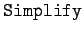 können oft komplizierte Ausdrücke, die nicht polynomialer Natur zu sein brauchen, vereinfacht werden. Mathematica wird immer versuchen, algebraische Ausdrücke unabhängig von der Natur der symbolischen Größen zu manipulieren. Dabei verwendet es eingebaute Kenntnisse. So kennt Mathematica z.B. Regeln der Potenzrechnung:
| 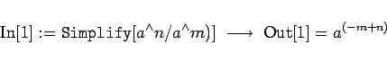 | (20.59) |
Mit dem Befehl FullSimplify[ausdr] wird Mathematica einen wesentlich breiteren Ansatz zur Vereinfachung einsetzen.
Für die Manipulation trigonometrischer Aus drücke stehen die Befehle TrigExpand, TrigFactor, TrigFactorList und TrigReduce zur Verfügung.
| Beispiel |
|
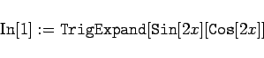
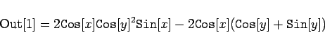
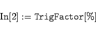
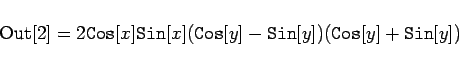
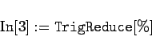
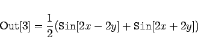
|
Schließlich sei darauf hingewiesen, daß der Befehl 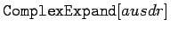 reelle Variable ausdr voraussetzt, während 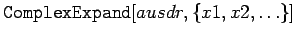 von komplexen Variablen xi ausgeht.
| Beispiel |
|
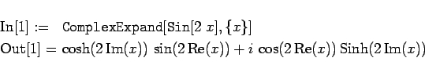
|